先講一件很多人查完謄本還是分不出來的事：任何人都調得到的第二類謄本，剛好把「債務人」那一欄遮起來。不是你不會看，是那一格真的沒印出來。
03 SECONDS
三秒看懂：三個當場做得完的動作
拿到謄本先跑這三個，跑完你就知道手上這份夠不夠用、要不要再調一份。
① 這份是第幾類
② 產權乾不乾淨
③ 借了幾筆、誰借的
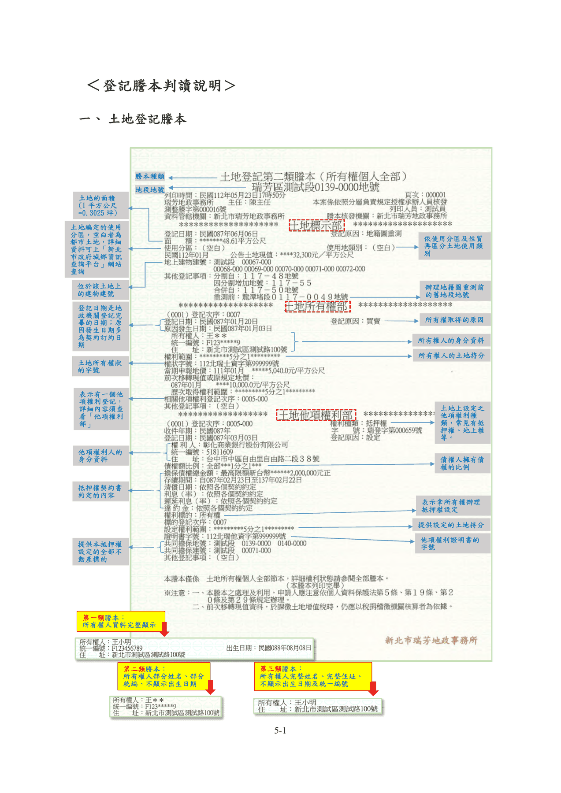
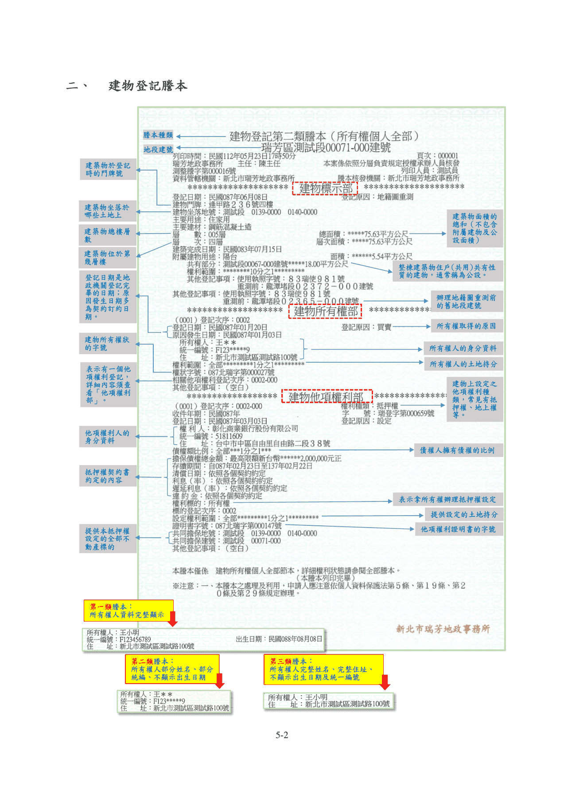
三秒之後的事，急不得。上面三個動作是分流，不是結論。真正決定「這間能不能買、要怎麼付款」的，是清償金額、塗銷條件與付款順序，那些謄本上沒有寫，要向債權人與地政士確認。
A
第一類、第二類、第三類，差的不是價錢
三類謄本同樣一份地號、同樣的規費，差別在「誰能調」跟「哪幾欄會被遮掉」。
很多人以為謄本就是謄本，去地政事務所說「我要調謄本」就好。實際上櫃檯會問你要第幾類，而這一題答錯，你會帶著一份看不到關鍵欄位的紙回家，還以為自己已經查過了。
| 誰能申請 | 會被遮掉的欄位 | 什麼時候該調這一類 | |
|---|---|---|---|
| 第一類 | 登記名義人本人，或依法令得申請的人（例如繼承人） | 不遮，顯示登記名義人全部登記資料 | 要看債務人與債務額比例時，只有這一類看得到 |
| 第二類 | 任何人都可以申請，不用經過屋主 | 出生日期、部分姓名、部分統一編號、債務人及債務額比例、設定義務人，以及其他依法令規定應隱匿的資料 | 查有沒有限制登記、查抵押權筆數與權利人、查標示部的面積與使用分區——都夠用 |
| 第三類 | 登記名義人本人，或具有法律上通知義務、權利義務得喪變更關係的利害關係人 | 統一編號、出生日期 | 有利害關係（例如債權人）但不是本人時走這一類 |
三類長什麼樣，官方樣張直接對照
下面四張是同一筆地號（板橋區民族段 1099-0000）的官方樣張，人名地號都是機關的測試資料。紅框裡就是三類之間唯一會動的那幾格，其餘欄位三類完全一樣。
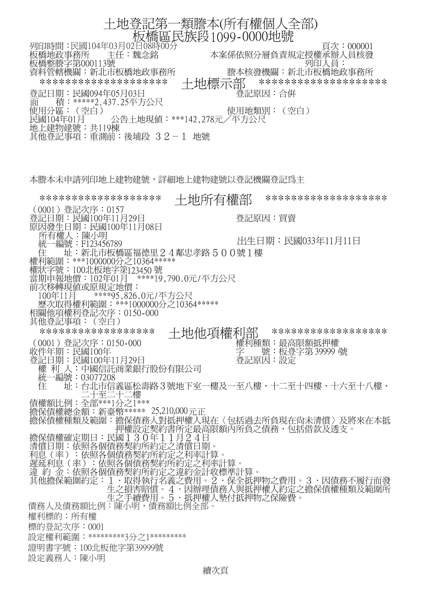
1 2第一類＝沒有東西被拿掉。只有登記名義人本人或依法令得申請的人調得到。
買方拿不到它，這不是刁難——這一類會把屋主的完整身分資料印出來，本來就不該讓任何人都調得走。
所以買方需要「債務人」那一欄時，正確做法不是想辦法自己調，是請賣方提出。
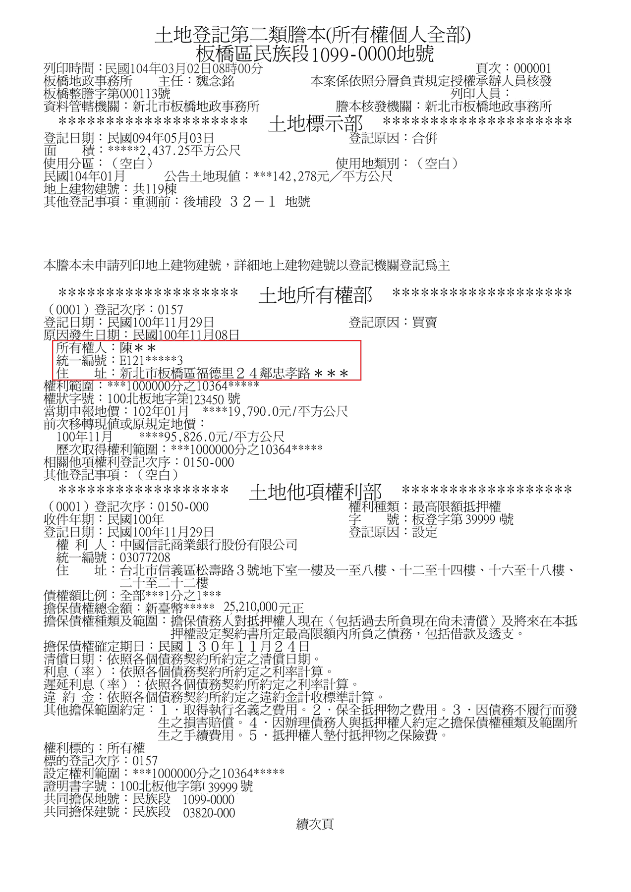
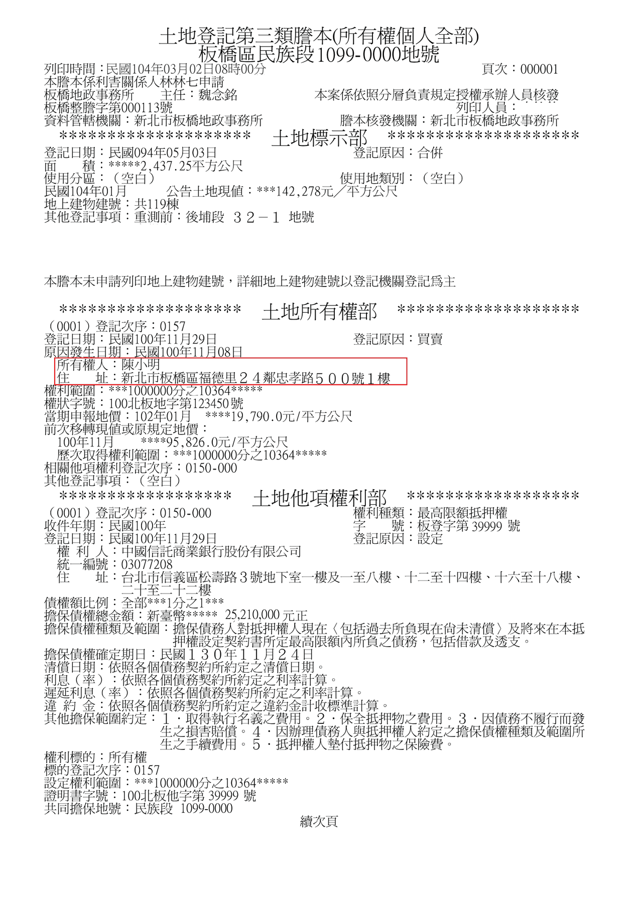
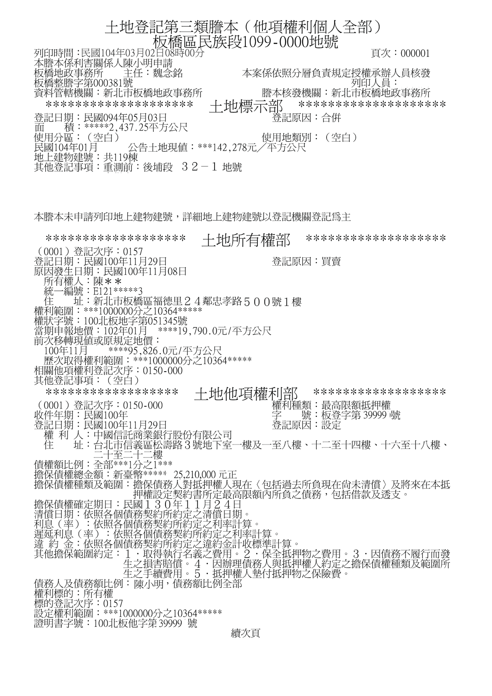
1 2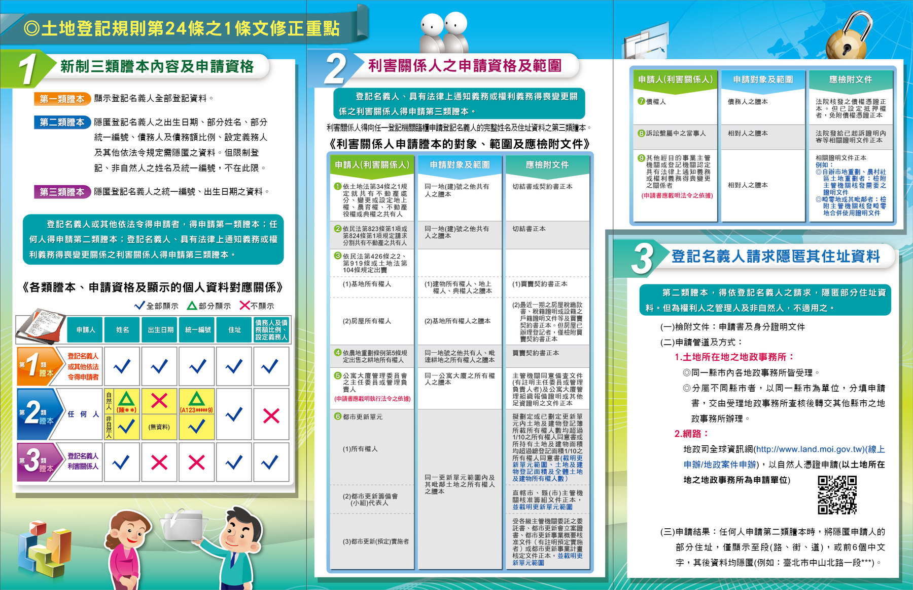
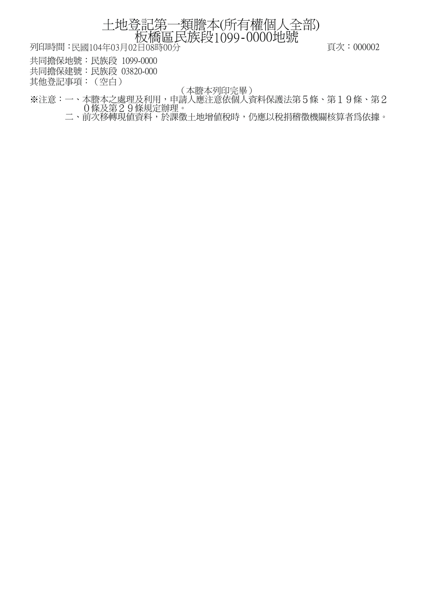
規費是按「張」算的，不是按「份」。電腦列印謄本每張 20 元，一份土地謄本可能兩張、三張。
拿到別人給的謄本影本，先看兩件事：頁次（第 1 頁的右上角會寫 000001），還有最後一張有沒有「本謄本列印完畢」。少一頁，少的常常就是他項權利部。
第二類有一個很多人不知道的但書
同一條規定裡寫著：限制登記，以及非自然人的姓名與統一編號，不在隱匿之列。拆成白話就是兩件事——
- 查封、假扣押、假處分、預告登記這些限制登記，第二類照樣印得出來。所以買方自己調一份第二類，就足以確認產權有沒有被卡住。
- 權利人如果是銀行、農會、公司這類法人，名稱與統編也照印。所以「錢是跟誰借的」，第二類看得到。
所以買方的正確動線是這樣：自己先調一份第二類（任何人都能調，不用看賣方臉色），把限制登記與抵押權筆數、權利人確認完。如果筆數多、想再往下確認是合資還是同一人多次借款，那一步不是自己硬查，是請賣方提供第一類謄本或債權人出具的清償證明——由賣方提出，比你想辦法繞路快得多。
MAP
一份謄本三段，先知道自己翻到哪裡
後面每一節都會說「翻到某某部」，先把這三段的分工記住，後面就不會迷路。
標示部
寫這筆土地或這棟建物本身的資料：面積、地號或建號、使用分區、使用地類別、主要用途、建築完成日期。
看「是什麼」
所有權部
寫誰的：所有權人、權利範圍（持分）、登記原因與日期，以及最關鍵的「其他登記事項」——限制登記登在這裡。
看「誰的、有沒有被卡住」
他項權利部
寫被設定了什麼：權利種類、權利人、登記次序、擔保債權總金額或最高限額、存續期間、債務人（第一類才有）。
看「欠誰、第幾順位」
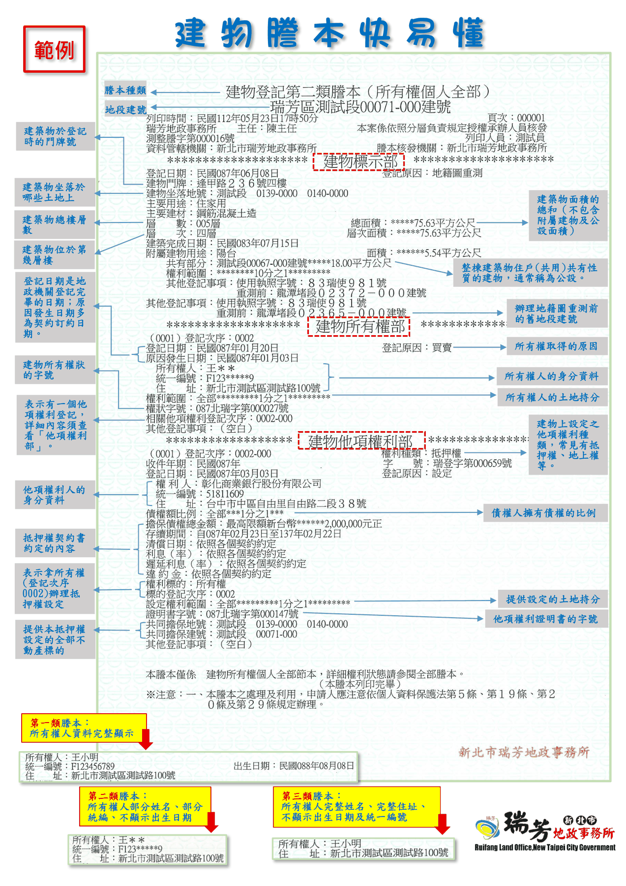
最常見的一個找錯地方：要確認有沒有被查封，很多人一路翻到他項權利部去找。查封、假扣押、假處分、預告登記都不在他項權利部，它們登在所有權部的「其他登記事項」欄。只翻他項權利部，會漏掉整組限制登記。
標示部裡最容易被跳過的一欄：附屬建物用途
買中古屋的人幾乎都會問「權狀坪數是怎麼算出來的」。答案有一半在標示部這一欄——陽台、平台、露台、花台各自佔多少面積，這裡是分開列的。
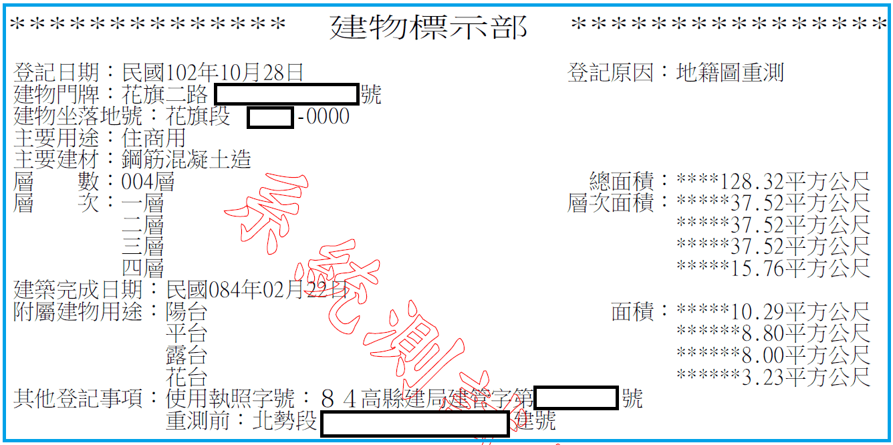
1 2不是每一戶都會有這四項。登記得到什麼、登記不到什麼，看的是這棟房子當年取得建照的時間點。
所以同社區、同格局、權狀坪數卻差幾坪，多半不是誰算錯，是當年那條規則長什麼樣。右邊那張時間軸就是在講這件事。
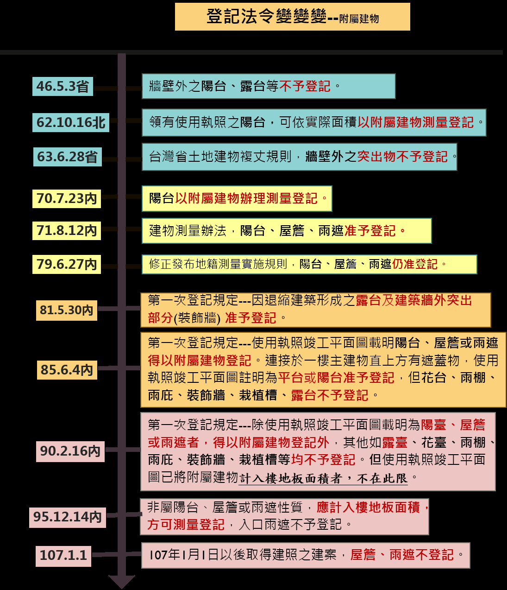
C
土地那兩欄：使用分區 × 使用地類別
在標示部，緊鄰著面積。這兩欄一起看才有意義，單看一欄會下錯結論。
買土地、買農地、買透天連著一塊地的人，最後都會卡在同一個問題：這塊地到底能做什麼？答案不在一欄，在兩欄的組合。
- 使用分區＝這一整片區域被劃成什麼（例如一般農業區、特定農業區、山坡地保育區、鄉村區、森林區）。
- 使用地類別＝你這一筆地被編定成什麼（例如農牧用地、林業用地、甲種建築用地）。
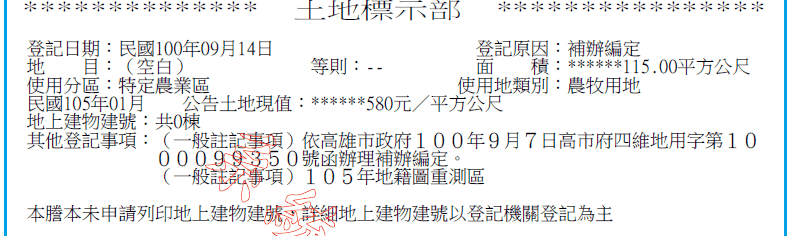
1 2 3位置固定在標示部，緊接在登記日期下面。翻到標示部，由上往下數第三、四行就是。
把這兩格的字原封不動抄下來，帶去問地政事務所或建管單位，對方就答得出來。不用背十九種使用地，要會抄。
同樣是「農牧用地」，落在一般農業區跟落在山坡地保育區，能申請的項目與強度並不一樣。所以只講「我那塊是農地」，資訊量幾乎是零——要把兩欄的字一起念出來，對方才有辦法回答你。
甲、乙、丙、丁——分的是建築用地，不是農地
坊間常聽到「甲種農地」「乙種農地」這種講法，但翻開謄本你不會看到這幾個字。甲、乙、丙、丁是「建築用地」的四種編定，差別在這塊可建築的地座落在哪一種分區裡：
| 編定 | 供什麼使用 | 白話說 |
|---|---|---|
| 甲種建築用地 | 供山坡地範圍外之農業區內建築使用 | 平地農業區裡的建地 |
| 乙種建築用地 | 供鄉村區內建築使用 | 聚落、村莊那一圈裡的建地 |
| 丙種建築用地 | 供森林區、山坡地保育區、風景區及山坡地範圍之農業區內建築使用 | 山坡地那一側的建地 |
| 丁種建築用地 | 供工廠及有關工業設施建築使用 | 廠房用的地 |
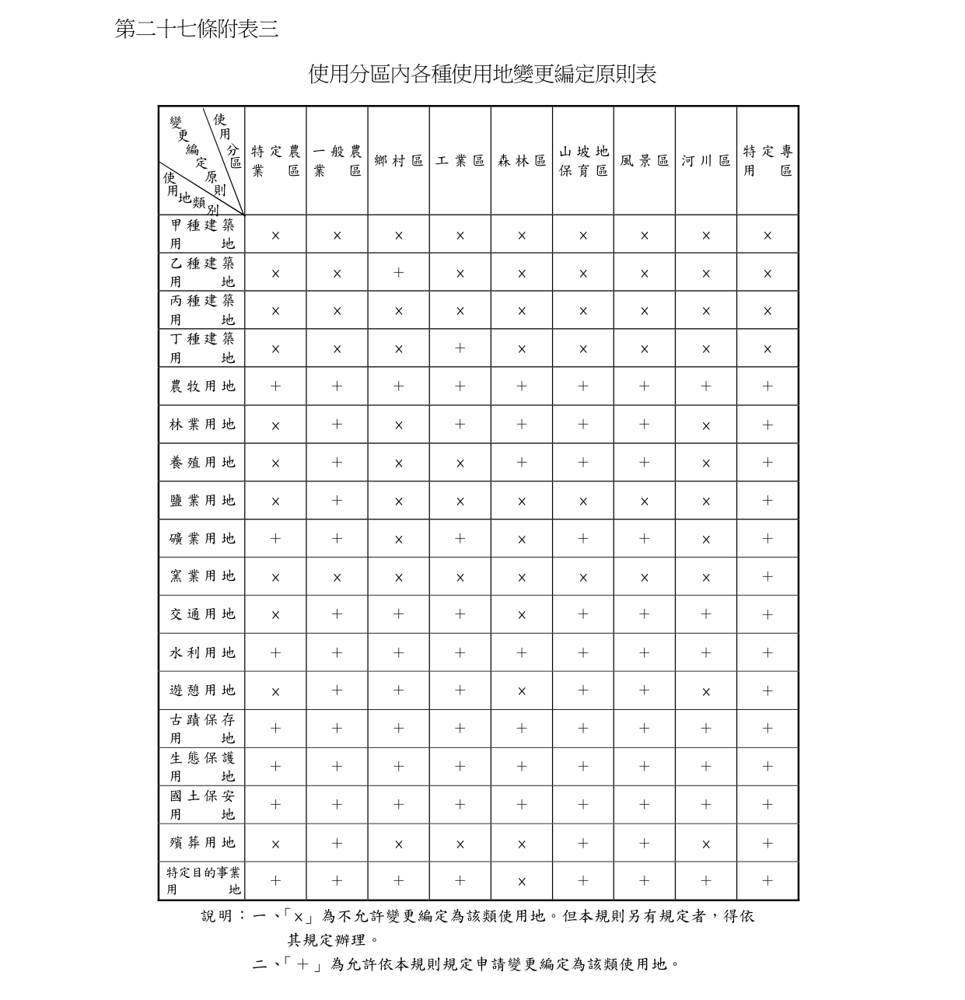
1 2這張表在講的是「能不能變過去」，不是「現在能蓋什麼」。看到一整列叉號，意思是別人的地很難變成甲種建築用地，不是甲建比較高級。
這是命令的附表，依著作權法第 9 條不得為著作權標的——可以整張拿去用，來源也查得到。
所以「甲建、乙建」在講的是位置，不是等級。不是甲比乙好、乙比丙好。它們對應的是不同的分區環境，各自的建蔽率、容積率與可申請項目都由該分區的管制規定決定，不能互相換算，也不會因為你想改用途就自動變更。
那農地要看哪裡
農地在謄本上的使用地類別，通常寫的是農牧用地，山上那些多半是林業用地，魚塭是養殖用地。真正決定它能不能蓋農舍、能不能設農業設施的，是「使用分區 ＋ 使用地類別 ＋ 個案審查」三件事，不是謄本上單一個詞。
非都市土地的使用地類別共有十九種，除了上面提到的建築、農牧、林業、養殖之外，還有鹽業、礦業、窯業、交通、水利、遊憩、古蹟保存、生態保護、國土保安、殯葬、海域、特定目的事業等類別。你只要在自己那張謄本上找到寫著的那一個，抄下來去問主管機關就好——不用背，要會抄。
「地目」那一欄，現在是空的
常有人拿著舊資料問「我這塊地目是建還是田」。地目等則制度已於民國 106 年 1 月 1 日正式廢除，現行謄本不再登載。下面這張剛好是舊制年代的謄本，看得到那一欄留在原位、內容是空的。
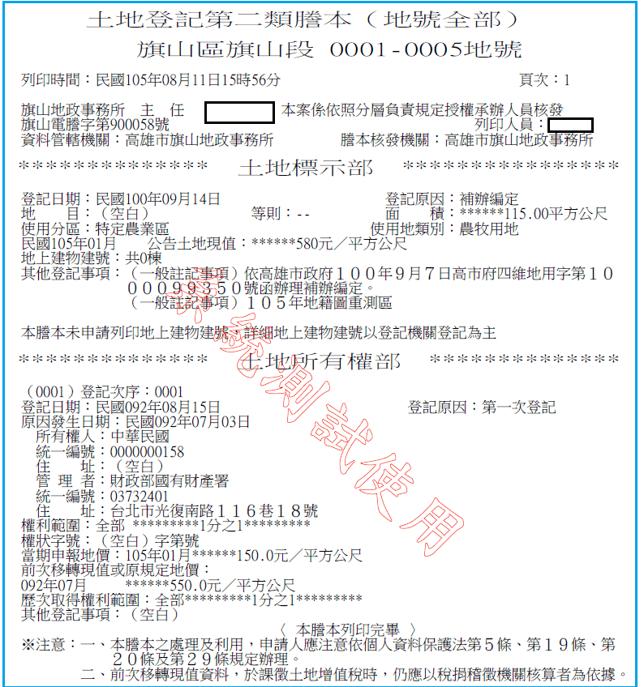
1 2整張是完整的第二類謄本，帶著機關的「測試使用」浮水印，上半標示部、下半所有權部一次看完。
順便注意所有權人那一欄寫的是「中華民國」、管理者「財政部國有財產署」——公有土地的長相就是這樣，沒有自然人的名字。
兩欄都空白的時候不要自己猜。空白有兩種完全不同的意思：一種是都市土地（都市計畫發布後改依都市計畫認定，不再登載於謄本），另一種是非都市土地但尚未編定。這兩種在紙上長得一模一樣。當場請櫃檯幫你確認是哪一種，屬於尚未編定的還可以申請補辦編定。
家裡有都市計畫外土地、想知道未來會被劃到哪一區的，接著看 國土功能分區查詢三步驟。
B
他項權利部好幾筆：是合資，還是同一個人一直借
同樣是三筆抵押權，兩種情況的意思天差地遠。分辨的方法是三個欄位，不是筆數。
看到他項權利部密密麻麻好幾筆，第一個反應通常是「這屋主是不是財務有問題」。不一定。合資買房的房子，他項權利部本來就會有好幾筆——三個人各自跟各自的銀行貸款，就是三筆。這跟同一個人拿同一間房子借了三次，是完全不同的事。
| 看哪一欄 | 合資的樣子 | 同一人多次借款的樣子 |
|---|---|---|
| 債務人 （第一類才印） |
每一筆的債務人是不同的人，各自對應所有權部裡的一位共有人 | 每一筆的債務人都是同一個人 |
| 權利範圍 | 寫持分（幾分之幾），對得上該共有人在所有權部的持分 | 寫全部，整間房子都押進去 |
| 登記次序 | 各筆之間不必然構成順位競合，因為押的是不同持分 | 依序第一順位、第二順位、第三順位——市場上俗稱的一胎、二胎、三胎 |
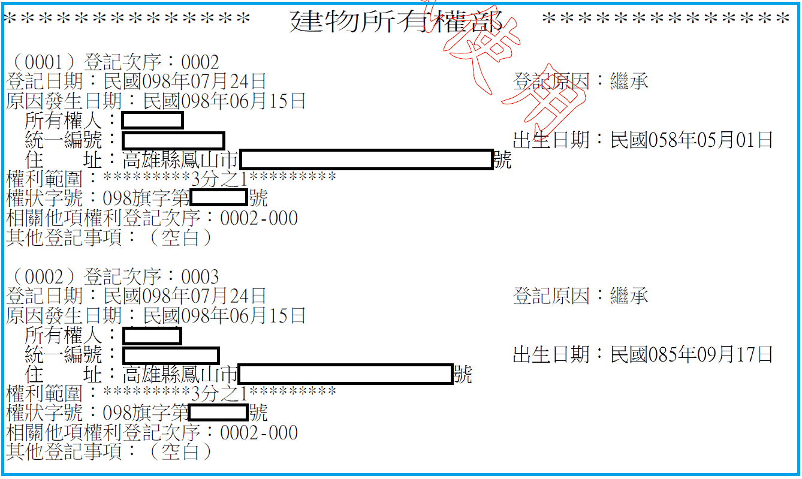
1 2先數所有權部有幾個「（000n）登記次序」。一個人一筆，數字就是共有人數。
圖上只有兩筆，實務上三筆、四筆都有。把每一筆的權利範圍加起來要等於 1；加不起來就是還有一頁沒印到。
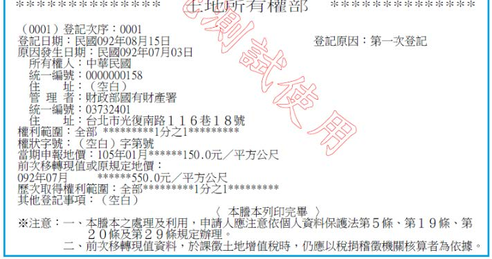
「全部」跟「1分之1」是同一件事講兩次，不是兩個欄位。
所以判斷合資只要比兩個數字：所有權部有幾筆、每筆權利範圍是不是 1分之1。兩個問題都不需要第一類謄本。
從所有權部先抓線索，不用等第一類
債務人那一欄第二類看不到，但你可以從另一頭反推：翻到所有權部，數有幾個所有權人。
- 所有權人只有一個，他項權利部卻有三筆權利範圍寫「全部」的抵押權——那就不會是合資，是同一個人借了三次。
- 所有權人有三個，各持分若干，他項權利部三筆各自寫著持分——合資的形狀很明顯。
合資買房要注意的重點不一樣。合資物件的麻煩通常不在「屋主欠錢」，而在要賣得全體共有人同意、每個人的貸款各自要清、簽約時人到不到齊。這是流程與時間的問題，不是產權瑕疵。把它當成瑕疵去砍價，多半談不成。
D
權利人是誰，決定的是「塗銷要跟誰談」
他項權利部的「權利人」欄，第二類謄本上法人名稱照印，看得到。
先把一個常見的推論拿掉：權利人是誰，不能拿來推斷屋主的財務狀況。它真正影響的是另一件很實際的事——成交那天，要跟誰要清償金額、塗銷要跑幾天、對方配合度如何。這是時程問題，會影響交屋日期，不影響這間房子好不好。
| 權利人欄寫著 | 通常是什麼 | 對交易的實際影響 |
|---|---|---|
| 銀行 | 購屋貸款或增貸，最常見 | 流程標準化，清償證明與塗銷有既定作業，時程最好抓 |
| 農會、漁會、信用合作社 | 地區型金融機構，農地與鄉鎮老屋常見 | 同樣是正規金融機構，作業時間依各單位而定，提早問 |
| 壽險或其他金融機構 | 房貸債權移轉，或以不動產擔保的其他授信 | 正常，找對窗口即可 |
| 資產管理公司 | 金融機構把債權整批移轉出去後的受讓人 | 談的對象換人，清償條件與時程要提早確認 |
| 融資公司、租賃公司 | 民間融資，常見於第二順位 | 條件與提前清償方式差異大，務必書面確認 |
| 自然人（個人） | 親友借貸、合資、民間借貸都有可能 | 沒有制式流程，塗銷要靠人配合，最需要把時程寫進契約 |
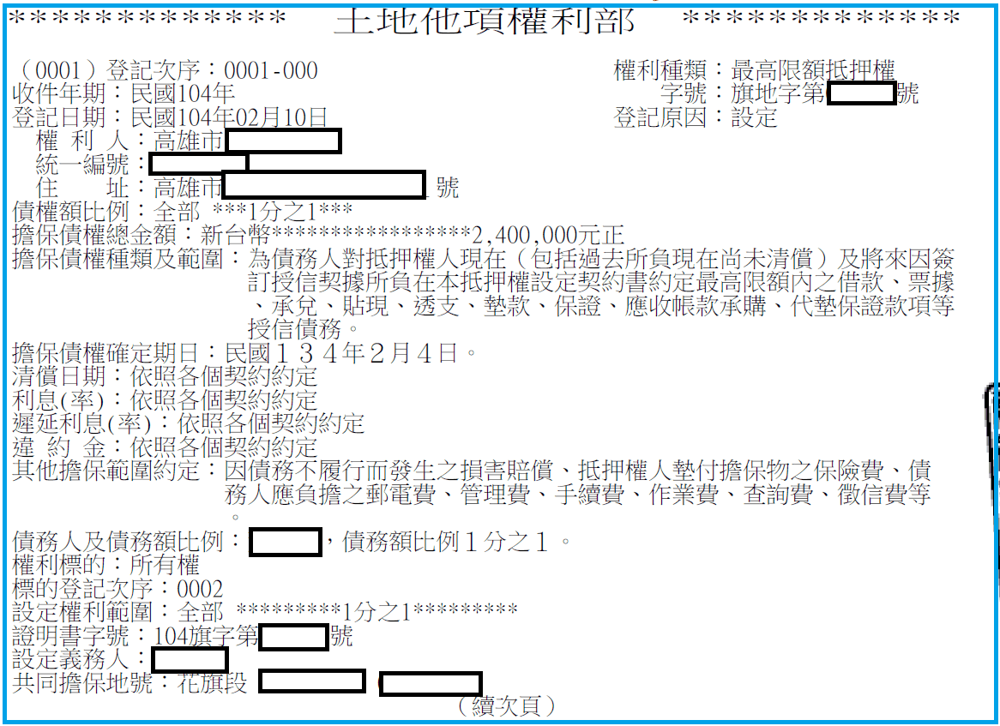
1 2 3圖上還有一格值得看：「擔保債權確定期日：民國134年2月4日」。
那是這個最高限額還能循環動用到哪一天，不是還款日。看到日期在很久以後，不代表債還很久——實際欠多少只有債權人說了算。
登記的金額，不是現在欠的金額
他項權利部寫著「擔保債權總金額」或「最高限額」，那是擔保範圍的上限，不是屋主此刻的欠款。
- 普通抵押權擔保的是特定債權，隨著還款，實際餘額會往下掉，但登記金額不會跟著改。
- 最高限額抵押權擔保的是一定範圍內的不特定債權（民法第 881-1 條），在限額內可以動用、清償、再動用。所以登記一千萬，實際可能欠八百萬、兩百萬，也可能接近零。
一胎二胎三胎，看的是括號裡那四個數字
市場上講的一胎、二胎，在謄本上沒有這三個字。它藏在每一筆他項權利最前面的括號裡。
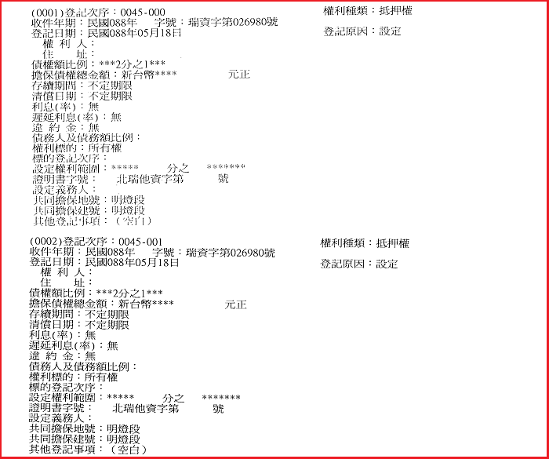
1 2高雄市政府地政局的導讀原文把這條規則寫得最直接：
登記次序前面括弧內所顯示的四位數字是（0002），則表示這個登記次序在該宗土地上是第 2 順位的他項權利。
高雄市政府地政局 土地及建物謄本導讀
規則會了，三筆、四筆都是同一招——不需要一張「三胎樣張」才看得懂。
這裡老實說一句：三筆以上他項權利同時出現的官方樣張，我們沒找到。
查過新北市政府地政局的五種官方樣張（各只有一筆）、高雄市政府地政局的三份謄本導讀（最多兩筆）、新北市瑞芳地政事務所的建物謄本快易懂（一筆）——政府文件不會為了示範二胎三胎去做一張多筆樣張。與其自己畫一張假的謄本充數，不如把上面兩筆這張講透：括號裡的數字怎麼跳，三筆四筆都是同一個讀法。
抵押權不會因為過戶就消失
民法規定，不動產所有人設定抵押權後，把不動產讓與他人，抵押權不因此而受影響。房子換了名字，抵押權還在上面。所以「清償、塗銷、付款、過戶」這四件事的先後順序，一定要白紙黑字寫進買賣契約，並由地政士依個案安排，不能靠賣方一句「交屋前我會處理」。
只想快速看懂「登記 1200 萬不等於欠 1200 萬」與二胎三胎那幾件事的，另有速讀版：謄本他項權利防雷懶人包。
E
車位在謄本與權狀上，有三種長法
先確認你那格屬於哪一種，才知道它能不能單獨賣、賣給誰。
車位最容易出事的原因很單純：它在紙上的樣子，跟你每天停的那格水泥地，看起來完全不像。付過錢、有收據、停了幾十年，都不能取代登記。
長法一：有獨立建號
在建物謄本上是自己一個建號，標示部的主要用途多半寫著停車空間，有自己的面積。
這種車位有獨立所有權狀，可以單獨移轉。常見於增設車位與獎勵車位。
長法二：登記在共有部分
沒有獨立建號。它出現在你那戶建物謄本的共有部分欄——記載共有部分的建號、主要用途（常見寫成防空避難室兼停車空間），以及你的權利範圍幾分之幾。
車位編號通常註記在其他登記事項或附表。這是法定車位最典型的樣子。
長法三：謄本上找不到
翻遍謄本，沒有獨立建號，共有部分也沒有你的車位編號——你手上只有一張收據、一份合約，或一句「永久使用權」。
這代表這格車位從來沒有走過登記。使用權在法拍面前保護不了持有人。
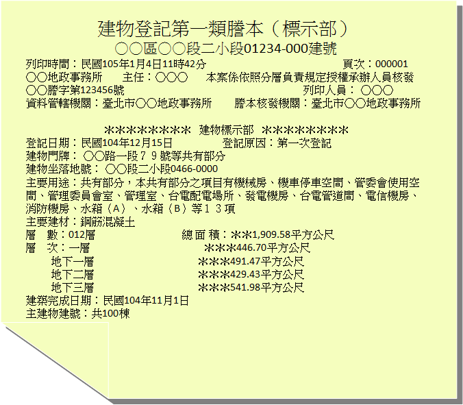
看到這種建號，接著要找的是你自己的「權利範圍幾分之幾」。它會出現在你那戶建物謄本的共有部分欄，不在這一張上。
圖上這張是第一類謄本的標示部，門牌與地號都用「○○」代稱。
官方文件怎麼定義「有沒有獨立產權」
政府文件講車位產權，一律用法條與函釋的文字在講，沒有做過「單獨建號車位謄本 vs 共有部分車位謄本」的並排樣張。所以這一段不放圖，直接把兩則原文列出來——來源可查，比自己畫一張示意圖可靠。
單獨編列建號以主建物方式登記，主要用途欄記載「停車空間」……所有權部及權狀登載「車位編號○○號」。
內政部 85.2.27 台內地字第 8573716 號函
區分所有建物地下層依法附建之防空避難設備或停車空間應為共有部分。
建物所有權第一次登記法令補充規定 第 10 點
| 謄本上長怎樣 | 權狀 | 能不能單獨賣 | |
|---|---|---|---|
| 單獨編列建號 | 自己一個建號，標示部主要用途寫「停車空間」，所有權部登載「車位編號○○號」 | 有自己的所有權狀 | 可以單獨移轉 |
| 法定停車空間 | 沒有獨立建號，登記在共有部分，你名下是權利範圍幾分之幾 | 依土地登記規則第 81 條，共有部分不另發給所有權狀，改在本戶權狀上註明 | 依法附建，隨主建物走，不能賣給社區以外的人 |
為什麼這裡用法條原文不用圖：我們實際開過新北市政府地政局的謄本介紹頁、高雄市政府地政局的建物謄本導讀、臺北市政府地政局與新北市政府地政局的車位專頁，都沒有這種並排樣張。與其自製一張「示意圖」讓人以為是官方謄本，不如把可以回頭查的原文擺出來。
權狀上為什麼看不到車位
依土地登記規則第 81 條，區分所有建物的共有部分不另發給所有權狀，而是在各區分所有建物的所有權狀上註明。所以法定車位不會有一張「車位權狀」，你看到的是本戶權狀上的一段註記加上持分。
要百分之百確認身分，謄本還不夠。謄本告訴你登記狀態，但法定、增設、獎勵各自的數量與位置寫在使用執照竣工圖上，向房屋所在地的建管單位（各縣市政府工務局或建管處）申請調閱。不會調就請地政士陪你走這一步。
F
那格車位，是不是完全屬於你
四個條件，缺一個就有一個地方要補。四個都在，這格車位換誰來都動不了。
條件一 謄本上找得到它
有獨立建號，或在共有部分附表裡找得到你的車位編號。兩者其一即可，但一定要有一個。
條件二 權利範圍寫得出分數
共有部分那一欄的權利範圍要有明確的幾分之幾。空白、或只有口頭約定，都不算。
條件三 契約寫了編號與登記方式
買賣契約只寫「含車位」三個字是不夠的。要寫到車位編號與登記方式（獨立權狀或持分），日後才有依據。
條件四 專用權有規約或分管協議撐著
持分型的車位，靠的是社區的分管協議或規約載明專用權。什麼都沒有的，趁現在補——把車位編號與專用權寫進規約（經區分所有權人會議通過），或由全體共有人另立分管協議。
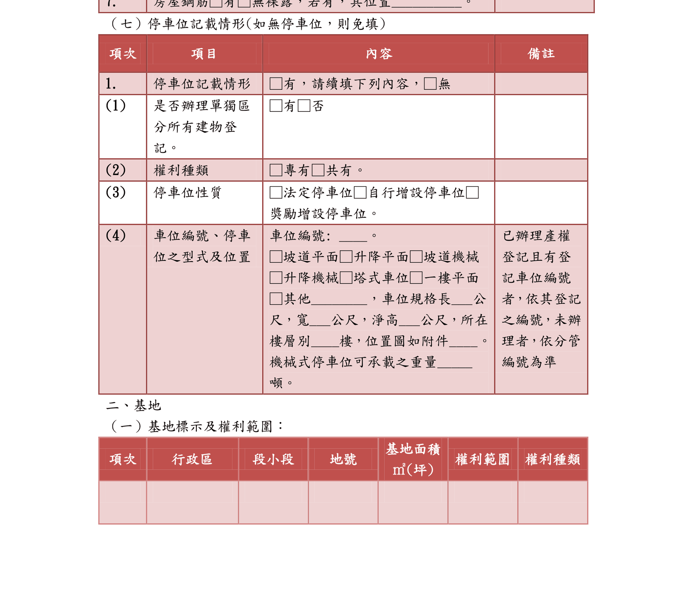
這格不是我們設計的問法，是仲介依法必須填的欄位。看物件時直接翻不動產說明書，翻到「(七)停車位記載情形」。
最下面那格「車位編號、停車位之型式及位置」右邊的備註寫得很清楚：已辦理產權登記且有登記車位編號者，依其登記之編號；未辦理者，依分管編號為準。問「我那格是幾號」，答案該從這裡出來。
五句話聽到就先停：
- 「永久使用權」——使用權不是產權。
- 「車位不用過戶，跟管理員講一聲就好」——沒有登記的移轉，換一手就沒了。
- 「都可以過戶啦」——請對方拿謄本出來對，不是回答。
- 只給收據或合約影本，不給看謄本。
- 價格明顯便宜的獨立權狀車位——先確認是不是獎勵車位，它的出身是應供公眾使用。
法定、增設、獎勵三種車位能賣給誰，以及民國 80 年 9 月 18 日那條產權分水嶺，另有專頁：三種車位自查表。
H
風險對照表：這不必然代表什麼
每一列都有一欄叫「這不必然代表」。把風險無限上綱，真正該紅的那一行就會失效。
| 你看到的 | 可能代表 | 這不必然代表 | 下一步 |
|---|---|---|---|
| 好幾筆抵押權，債務人是不同的人 | 合資買房，各自貸款 | 不代表屋主財務有問題 | 確認全體共有人的出售意願與到場安排，抓長一點的簽約時程 |
| 同一債務人，第二、第三順位 | 拿同一份產權再借了一次、兩次 | 不代表急售，也不代表可以砍價 | 請賣方提供各筆清償金額，確認總額與售價的關係、能否安全塗銷 |
| 權利人是自然人 | 親友借貸、合資或民間借貸 | 不代表利率高，也不代表對方難談 | 把塗銷所需文件與時程寫進契約，預留配合時間 |
| 登記金額看起來很大 | 擔保範圍的上限 | 不代表現在欠這麼多 | 向債權人取得清償金額，不要用倍數推算 |
| 其他登記事項出現查封、假扣押 | 產權被限制，未塗銷前會影響新登記 | 不代表這間房子一定買不成 | 先暫停簽約節奏，查清案件狀態與塗銷條件，由地政士評估可行性 |
| 出現預告登記 | 有人為保全特定請求權辦了登記 | 不代表有債務糾紛 | 確認請求權內容與塗銷需要誰同意 |
| 標示部使用分區、使用地類別空白 | 都市土地，或非都市土地尚未編定 | 不代表謄本印錯或有問題 | 當場請櫃檯確認是哪一種 |
| 合約只寫「含車位」 | 車位的登記方式還沒談定 | 不代表對方要騙你 | 當場補寫車位編號與登記方式，這是最便宜的一次修正機會 |
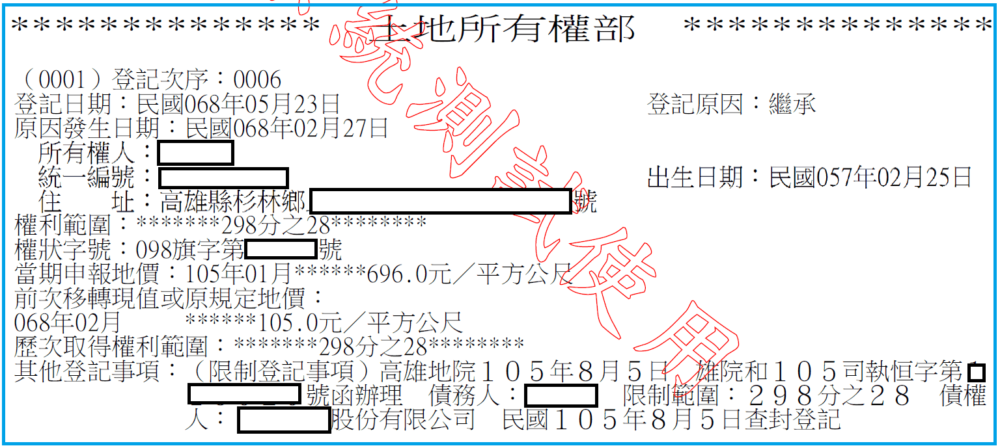
「限制範圍」那個數字要看。圖上寫 298分之28——查封的是這位共有人的持分，不是整筆地。
所以看到查封先問兩件事：查的是誰的持分、範圍多少。這兩個答案會決定它跟你要買的那部分有沒有關係。
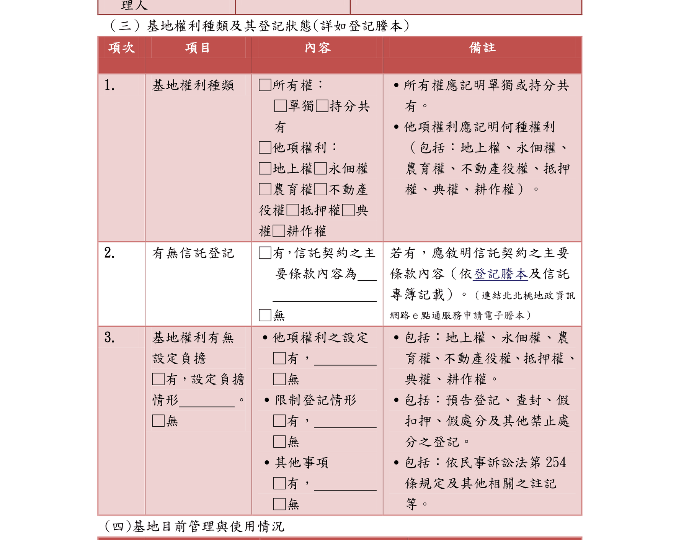
1 2同一格上面那一列還有一行定義值得抄：他項權利「包括：地上權、永佃權、農育權、不動產役權、抵押權、典權、耕作權」——七種，抵押權只是其中一種。
所以「他項權利部有東西」不等於「有貸款」。先看權利種類寫什麼，再往下判斷。
真正需要停手的只有一種情況：你問了、對方答不出來，而且不願意提供可以查證的書面。現象本身不可怕，可怕的是沒有人能說清楚它怎麼收尾。
NOW
勾起來的，是還沒確認的
勾越少代表你越有底。確認一項就把勾拿掉。這張表存在你這台裝置裡，關掉再打開還在。
OFFICIAL
要查、要調，去這幾個地方
臨櫃申請不限土地所在地，任何一間地政事務所都收件。帶身分證正本，規費電腦列印謄本每張 20 元，一份可能不只一張。使用執照竣工圖要向房屋所在地的建管單位（各縣市政府工務局或建管處）申請。
SOURCE
這一頁的每一條，出自哪裡
這一頁的圖，出自哪裡
全頁 25 張圖全部取自台灣政府機關官網，人名地號皆為機關的測試資料，無任何真實個人資料。各來源的資料開放宣告均要求註明出處，因此每張圖下方都標了機關全銜與擷取日期。圖上原有的紅框與箭頭是機關自己畫的；我們加的框一律是紅色細框加圓形序號，兩者不混用。
授權狀態逐一查證：新北市政府地政局、內政部地政司（政府資料開放授權條款第 1 版）、臺北市政府地政局與臺北地政電子報，均為無償非專屬、可重製改作、使用時應註明出處，授權範圍不及於機關標誌。全國法規資料庫附表三為命令之一部分，依著作權法第 9 條不得為著作權之標的。高雄市政府地政局的頁面層級資料開放宣告，官網未揭露——推測網址四個實測皆為 404，目前能引用的是高雄市政府資料開放平台的市府層級總則（無償、非專屬、可重製改作、應註明資料來源主管機關）。本頁引用該局圖片共 8 張，出處均已標明至機關全銜與文件名稱，如經該局通知即撤換。
本頁為一般性產權知識整理，資料查核日期 2026-08-28，不構成法律、稅務或財務建議，也不針對任何個案。每一筆土地與建物的登記狀況，一律以地政事務所核發之謄本記載為準；車位的法定、增設、獎勵身分以使用執照竣工圖與建管單位認定為準。法規與函釋可能修正，正式適用以主管機關最新公告為準。實際交易請委任地政士辦理，或向地政機關、建管單位確認。使用本頁資訊所做的任何決定由使用者自行判斷，本頁提供者不負擔法律責任。
阿宏賣房不賣夢，陪你完成夢，但不陪你做錯夢。
上面這些是給所有人的，看完收起來，不用急著問誰。
真的要處理手上那一份謄本，再往下點。
提醒一句。這是免費的知識整理頁，不是匯款連結，也不會要求你輸入帳號、密碼、信用卡或驗證碼。若有人冒用阿宏或鴻觀名義要求付款，先不要理會、不要點陌生連結，直接撥打 165 查證。